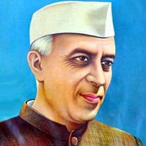
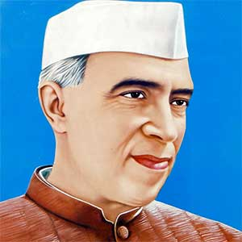
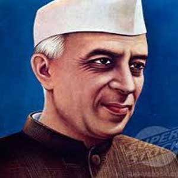

<!DOCTYPE html>
<html lang="en">

<head>
    <meta charset="utf-8">
    <meta http-equiv="X-UA-Compatible" content="IE=edge">
    <title>Nehru Story</title>
    <meta name="viewport" content="width=device-width, initial-scale=1, maximum-scale=1, user-scalable=no">
    <meta name="format-detection" content="telephone=no">
    <meta name="copyright" content="The Quint">
    <meta name="author" content="The Quint">
    <meta name="description" content="">
    <!-- Favicon -->
    <link rel="icon" type="image/x-icon" href="assets/images/favicon/favicon.ico">
    <!-- Custom styles for this template -->
    <link rel="stylesheet" href="assets/css/base.css" media="all">
    <link rel="stylesheet" href="assets/css/animate.css" media="all">
    <link rel="stylesheet" href="assets/css/font-awesome.min.css" media="all">
    <link rel="stylesheet" href="assets/css/theme.css" media="all">
    <link rel="stylesheet" href="https://fea.assettype.com/thequint/assets/fonts-86f8c78cce.css">
    <!-- Google Fonts -->
    <link href="https://fonts.googleapis.com/css?family=Oswald:400,700" rel="stylesheet">
    <!-- HTML5 shim and Respond.js for IE8 support of HTML5 elements and media queries -->
    <!-- WARNING: Respond.js doesn't work if you view the page via file:// -->
    <!--[if lt IE 9]>
<script src="https://oss.maxcdn.com/html5shiv/3.7.2/html5shiv.min.js"></script>
<script src="https://oss.maxcdn.com/respond/1.4.2/respond.min.js"></script>
<![endif]-->
</head>

<body>
    <div class="main-wrap">
        <section class="container">
            <div class="container--left" id="story_img"></div>
            <div class="container--right">
                <div class="box-wrap">
                    <!-- <h1 class="box-headline" id="story_headline"></h1> -->
                    <div class="box-content">
                        <span id="story_content"></span>
                        <span id="typedtext"></span>
                    </div>
                    <div class="box-audio" id="story_audio"></div>
                </div>
            </div>
        </section>
    </div>

    <!-- <div id="typedtext"></div> -->

    <!-- Scripts -->
    <script type="text/javascript" src="assets/js/jquery.min.js"></script>
    <script type="text/javascript">
    $(".container--left").click(function() {
        $(this).addClass("img-animate");
        // $(this).animate({left: '0'});
        // $(".main-wrap .container--right").css("width","500px");
        $(".container--right").addClass("box-width");
        $(".container--right").addClass("add-content");
        typewriter();
    });

    function getParameterByName(name, url) {
        if (!url) url = window.location.href;
        name = name.replace(/[\[\]]/g, "\\$&");
        var regex = new RegExp("[?&]" + name + "(=([^&#]*)|&|#|$)"),
            results = regex.exec(url);
        if (!results) return null;
        if (!results[2]) return '';
        return decodeURIComponent(results[2].replace(/\+/g, " "));
    }

    // content array
    var content_array = [{
            'img': '',
            'headline': 'Special Status to Delhi',
            'content': ['#01 Jawaharlal Nehru was the first Prime Minister of India and a central figure in Indian politics before and after independence. Jawaharlal Nehru was the first Prime Minister of India and a central figure in Indian politics before and after independence','Jawaharlal Nehru was the first Prime Minister of India and a central figure in Indian politics before and after independence.'],
            'audio': 'assets/media/audio--light-has-gone-30-jan-1948.mp3'
        },
        {
            'img': '',
            'headline': 'Special Status to Delhi',
            'content': ['#02 Jawaharlal Nehru was the first Prime Minister of India and a central figure in Indian politics before and after independence. Jawaharlal Nehru was the first Prime Minister of India and a central figure in Indian politics before and after independence','Jawaharlal Nehru was the first Prime Minister of India and a central figure in Indian politics before and after independence.'],
            'audio': 'assets/media/audio--light-has-gone-30-jan-1948.mp3'

        },
        {
            'img': '',
            'headline': 'Special Status to Delhi',
            'content': ['#03 Jawaharlal Nehru was the first Prime Minister of India and a central figure in Indian politics before and after independence. Jawaharlal Nehru was the first Prime Minister of India and a central figure in Indian politics before and after independence','Jawaharlal Nehru was the first Prime Minister of India and a central figure in Indian politics before and after independence.'],
            'audio': 'assets/media/audio--light-has-gone-30-jan-1948.mp3'
        },
        {
            'img': '',
            'headline': 'Special Status to Delhi',
            'content': ['#04 Jawaharlal Nehru was the first Prime Minister of India and a central figure in Indian politics before and after independence. Jawaharlal Nehru was the first Prime Minister of India and a central figure in Indian politics before and after independence','Jawaharlal Nehru was the first Prime Minister of India and a central figure in Indian politics before and after independence.'],
            'audio': 'assets/media/audio--light-has-gone-30-jan-1948.mp3'
        }
    ]


    section_id = getParameterByName('id');

    console.log(content_array[section_id].heading);

    $("#story_img").html(content_array[section_id].img);
    $("#story_headline").html(content_array[section_id].headline);
    $("#story_content").html(content_array[section_id].content[0]+'<br/><br/>'+content_array[section_id].content[1]);
    //$("#story_audio").html(story_content[section_id].audio);

    $("#story_audio").html(" <audio controls><source src="+content_array[section_id].audio+" type='audio/mpeg'></audio>");

    var aText = new Array(
        content_array[section_id].content[0],
        content_array[section_id].content[1]
    );

    console.log(aText);

    var iSpeed = 50; // time delay of print out
    var iIndex = 0; // start printing array at this posision
    var iArrLength = aText[0].length; // the length of the text array
    var iScrollAt = 20; // start scrolling up at this many lines

    var iTextPos = 0; // initialise text position
    var sContents = ''; // initialise contents variable
    var iRow; // initialise current row

    function typewriter() {
        sContents = ' ';
        iRow = Math.max(0, iIndex - iScrollAt);
        var destination = document.getElementById("typedtext");

        while (iRow < iIndex) {
            sContents += aText[iRow++] + '<br /><br />';
        }
        destination.innerHTML = sContents + aText[iIndex].substring(0, iTextPos) + "_";
        if (iTextPos++ == iArrLength) {
            iTextPos = 0;
            iIndex++;
            if (iIndex != aText.length) {
                iArrLength = aText[iIndex].length;
                setTimeout("typewriter()", 500);
            }
        } else {
            setTimeout("typewriter()", iSpeed);
        }
    }
    //typewriter();
    
    </script>
</body>

</html>